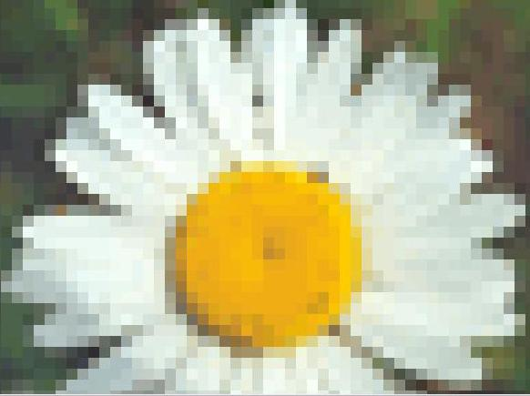

Пиксели
Растровая графика
Изображение состоит из множества пикселей. Каждый пиксель имеет положение и определённый цвет. Такой способ особенно хорошо подходит для фотографий и сложных цветовых переходов.
✓ Высокая детализация и естественные цвета
× При сильном увеличении становятся видны пиксели